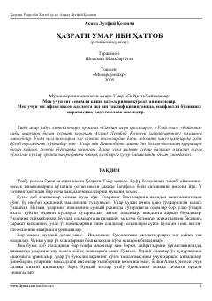

HUOlamga adolati tarqalgan buyuk xalifa Hazrati Umar ibn Xattobning hayot yo'li.
Ushbu asarda adolati va shijoati bilan tanilgan buyuk sahoba, mo'minlarning amiri Hazrati Umar ibn Xattobning hayoti, islom diniga kirishi va xalifalik davridagi faoliyati qiziqarli va ta'sirli hikoya qilinadi. Kitobda uning insoniy fazilatlari, adolatparvarligi hamda hayotidan olingan ibratli lavhalar ochib berilgan.